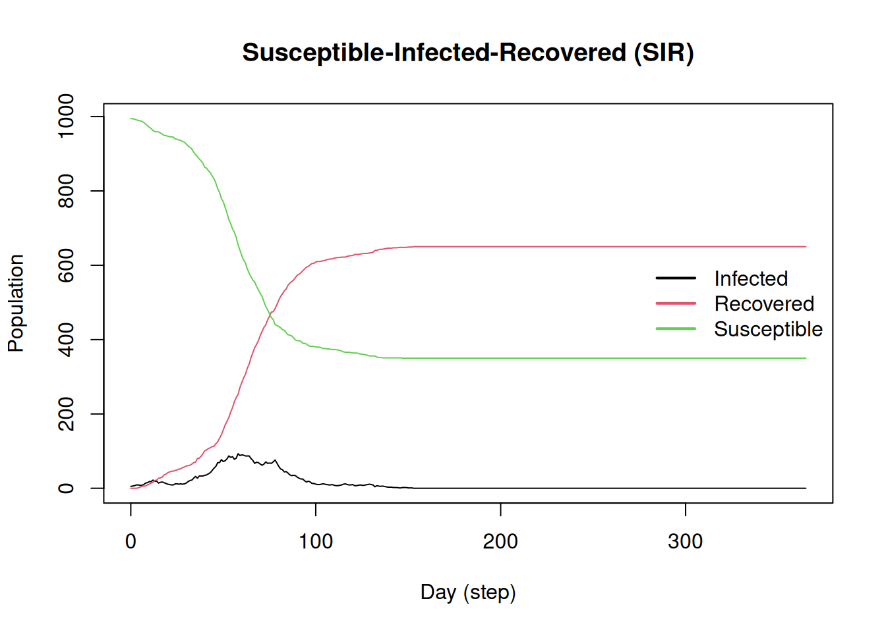
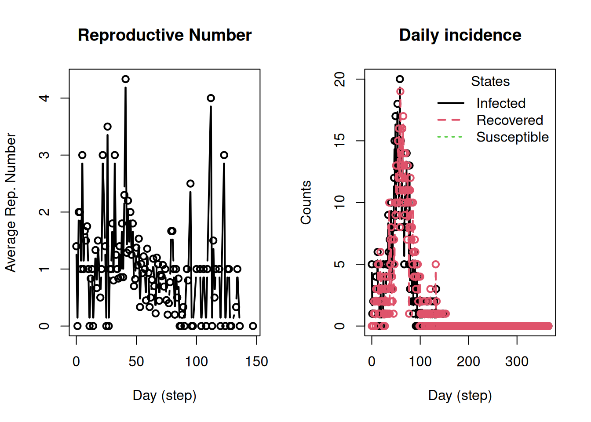

In this example, we will create a simple SEIR model using a Stochastic-Block Model for generating a random network (included in epiworldR). This creates a network with, in this case, two groups of 500 agents each, with a higher contact rate within groups than between groups.
Running the simulation
# Initializing SIR model with SBM networklibrary(epiworldR)
Thank you for using epiworldR! Please consider citing it in your work.
You can find the citation information by running
citation("epiworldR")
sir <-ModelSIR(name ="COVID-19",prevalence =5/1000,transmission_rate =0.01,recovery_rate =1/7)# Creating the SBM network featuring two groupsagents_sbm( sir,block_sizes =c(500, 500),mixing_matrix =matrix(c(20, 5, 5, 20), nrow =2))# Running the simulationrun(sir, ndays =365, seed =1912)
_________________________________________________________________________
Running the model...
||||||||||||||||||||||||||||||||||||||||||||||||||||||||||||||||||||||||| done.
After the simulation takes place, we can use the methods summary() and plot() to get a first look at the results:
summary(sir)
________________________________________________________________________________
________________________________________________________________________________
SIMULATION STUDY
Name of the model : Susceptible-Infected-Recovered (SIR)
Population size : 1000
Agents' data : (none)
Number of entities : 0
Days (duration) : 365 (of 365)
Number of viruses : 1
Last run elapsed t : 9.00ms
Last run speed : 38.00 million agents x day / second
Rewiring : off
Last seed used : 1912
Global events:
(none)
Virus(es):
- COVID-19
Tool(s):
(none)
Model parameters:
- Recovery rate : 0.1429
- Transmission rate : 0.0100
Distribution of the population at time 365:
- (0) Susceptible : 995 -> 350
- (1) Infected : 5 -> 0
- (2) Recovered : 0 -> 650
Transition Probabilities:
- Susceptible 1.00 0.00 -
- Infected - 0.85 0.15
- Recovered - - 1.00
The summary() method prints the following information:
The model metadata, including, name, population, duration, and elapsed time.
Information about events (which we don’t have yet), viruses (single), and tools (none).
Model parameters (which can be modified via set_param()).
Distribution of the agents from time 0 to ndays (365 in this case), and
The transition matrix, where each entry indicates the transition probability from one state to another.
The plot() method provides a simple view of the outbreak, too.
plot(sir)

But we can get much more detailed information! Mostly using the following functions:
get_active_cases()
get_generation_time()
get_hist_total()
get_hist_transition_matrix()
get_hospitalizations()
get_outbreak_size()
get_reproductive_number()
get_transition_probability()
get_transmissions()
Although, most names are self-explanatory, we will try them out later.
Visualizing the results
op <-par(mfrow =c(1, 2))plot_reproductive_number(sir)plot_incidence(sir)

par(op)
We can even generate the transmission network (which should be clustered). We use the data.table R package for data wrangling and netplot for network visualization:
Basic model. Look for the ModelSEIRCONN() and create an Agent-Based model featuring 10,000 agents. Run a simulation with the following characteristics: (a) has a virus with 1 initial case, (b) has a transmission rate of 0.1 with a reproductive number of 2 (so you need to figure out the contact rate), (c) runs for 50 days.
TipSimple ABM calibration
In the case of a simple ABM (based on a fixed contact and transmission rate), we can use the following equation to calibrate our models:
Where is the contact rate, is the recovery rate, and is the transmission rate.
Multiple runs. Look at the documentation of run_multiple() and (a) create a saver that extracts the outbreak size, (b) execute the model for the same 50 days, and (c) extract the saved outbreak size and plot the distribution.
A network model. Using the ModelSEIR() function, (a) create a version of the model using a network instead (you can use the small-world network), (b) replicate the run_multiple() exercise. and (d) compare the distribution with and without network
TipCalibration of Network Models
Calibrating network-based models is not a simple task. The traditional sense of the basic reproductive number is somewhat misleading in network-based models overestimating the quantity (see Huang et al. (2025)). Nonetheless, for the moment, it will still give you a good starting point.
References
Huang, Peng, Zack W. Almquist, and Carter T. Butts. 2025. “Endogenous Competition and the Underrealized Reproduction of Infectious Diseases.”Proceedings of the National Academy of Sciences 122 (23): e2502676122. https://doi.org/10.1073/pnas.2502676122.